Análise de correlação
Pearson, Spearman, Kendall e correlação parcial. Pressupostos, matriz de correlação e redação dos resultados.
Mestrado em Administração · PPGA/UFCG · 2026
Apostilas, tutoriais, slides e bases de dados abertos. As análises usam o Jamovi, programa gratuito de estatística. Cada tema traz o material, a base dos exemplos e, quando houver, a análise pronta.

Materiais
Pearson, Spearman, Kendall e correlação parcial. Pressupostos, matriz de correlação e redação dos resultados.
Preparação da base, descrição da amostra, comparação entre grupos e interpretação. Recorte de pesquisa do NUPFIN.
Modelo hierárquico em blocos, coeficientes, pressupostos, erros-padrão robustos e redação em formato de artigo.
Slides
Da pergunta de pesquisa às inferências: teoria, dados e método.
Como usar
Produtos
Em breve: painéis de dados e materiais em Python.
Como citar
Os materiais estão sob a licença Creative Commons Atribuição 4.0 (CC BY 4.0). Pode usar, adaptar e redistribuir, desde que cite a autoria.
CONFESSOR, Kliver Lamarthine Alves. Métodos Quantitativos de Pesquisa em Administração: materiais didáticos (apostilas, tutoriais e bases de dados para Jamovi). Campina Grande: PPGA/UFCG, 2026. Disponível em: https://profkliver.github.io/mqpa/.